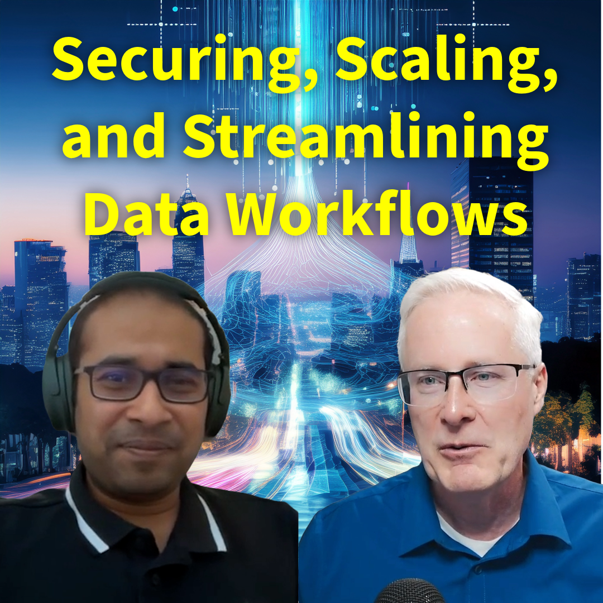

#271 Real-Time AI at the Edge: Transforming Defense and Mission-Critical Ops
In this episode of "Embracing Digital Transformation," host Dr. Darren converses with tech innovator Kelly from Graid Tech, delving into the critical nuances of data management and protection within the realms of edge computing and generative AI. Wit..
Regarder Maintenant Écouter Maintenant

#270 IA à la périphérie : Sécuriser, dimensionner et rationaliser les flux de données
Dans cet épisode, le Dr Darren engage une conversation stimulante avec Nilesh Agarwal, cofondateur et CTO d'InferLess. Nilesh explore l'évolution de l'IA et le rôle crucial de la gestion des données dans le paysage actuel. Il met en évidence les défi..
Regarder Maintenant Écouter Maintenant